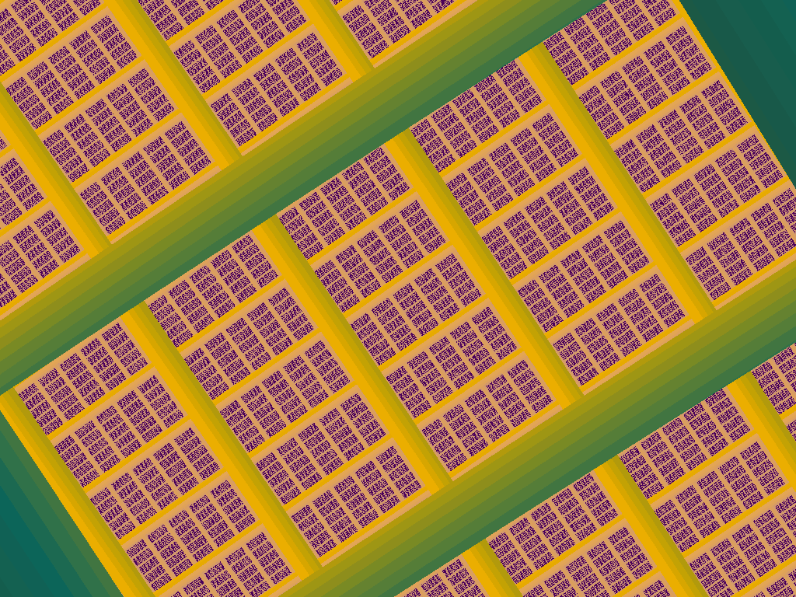

Computer music actually began with algorithmic composition, not synthesis, and algorithmic composition has remained a focus of research throughout the brief history of this field. Thus a general survey is beyond the scope of this chapter (some pointers to additional resources are provided at the end). The purpose of this chapter is to develop a narrow yet deep understanding of some basic principles of algorithmic composition, as illustrated by sample programs in Java that generate scores for Csound.
The focus is on esthetics and composition, as much as the details of software. Why write software to write music, instead of just writing music? What compositional techniques might be fruitful at this dawn in the history of the field? How does one make music with free stuff like Csound and Java?
After working through this chapter, you should be able to write your own score generators. The scores produced by the sample programs are suitable for synthesis with Csound using either the the plain old command-line approach, or the ScoreManager object from the chapter "Creating and Using a Platform-Independent Graphical User Interface for Csound in Java."
Algorithmic composition is not new. It began with the wind chimes of the most ancient civilizations, and the Aeolian harp. In a more considered sense it it goes back at least as far as Mozart’s musical dice game. Similar systems were peddled in the 19th century (Scholes 1975). More recently, but predating computers, Joseph Schillinger (1946, 1948; DeGazio, no date) worked out a system of composition that lends itself to algorithmic score generation.
Mozart’s game and Schillinger’s system are informal examples of generative grammars. Some music theorists, notably Lerdahl and Jackendoff (1983), cast their theories as completely formal systems, generative grammars in the mathematical sense. It is a natural thought to turn the rules on their head, to use theory to synthesize compositions from parts instead of analyzing them (Holtzman 1981; Roads 1978, 1985).
In the modern age, yet still predating computers, some composers turned to another generative principle, chance. A notable example is Iannis Xenakis (1992), who in his later career used computers to implement and extend probabilistic algorithms. There is an obvious synergy between the grammatical and the probabilistic approaches, in that random variables can select structures and rules in a generative grammar.
Running alongside the history of compositional algorithms on paper or as works of the intellect is a parallel history, of algorithms embodied in mechanisms. They range from the Aeolian harp, through clockwork and carillons to various gadgets of the Renaissance and Enlightenment (Ord-Hume 1973, Buchner 1978, Lyr 1955, Prieberg 1975), through the electronic fantasias of such inspired eccentrics as Raymond Scott (1992) with his Electronium or "instantaneous composing machine" of the late 1950’s, to the composing machine built by the engineers who made the RCA synthesizer used by Milton Babbitt (Olson and Belar 1961, Hiller 1970), and culminate in the modular synthesizer, whose oscillators and filters and sequencers, patched together with complex nets of cords, burbled and whacked their way into unforeseeable progressions and polyrhythms.
Here a theme emerges, to be pursued on the computer down into its mathematical basis: the machine becomes unpredictable and makes fascinating sounds that the composer attempts to shepherd into artful form, not always unsuccessfully, with his or her knobs and switches.
But electronic systems, so vigorously proliferating in the 1970s, have faded in favor of the universal machine: the computer.
The very first piece of computer music was perhaps Hiller and Isaacson’s Iliac Suite, for String Quartet (1957a, 1957b). It does not involve sound synthesis at all, but is an algorithmic composition in which random variables select structures and rules for elaborating structures. Hiller invented fundamental concepts in algorithmic composition (1970, Hiller and Isaacson 1959), and made other important pieces, including The Computer Cantata (Hiller and Baker 1964) and HPSCHD, a collaboration with John Cage (Cage and Hiller 1969, Hiller and Cage 1968).
An even broader influence upon composition is that of Cage himself, who used aleatoric procedures for both composition and performance, e.g. in Music of Changes (1961, pp. 57-61), and who also mapped natural forms onto musical scores, e.g. the star charts in Atlas Eclipticalis (Cage 1992). These works can be considered (to some extent, for he also used his own judgment) algorithmic compositions, because after chosing source materials and mappings, he generated the scores with pre-defined procedures. After all, tossing a coin is also a procedure.
That is what an algorithm is: a definite procedure. A recipe. Mindless instructions an idiot can follow. But a quick enough idiot with clever enough instructions can do a great deal... in fact, any single thing...yet, not all things!
If you wish to to grasp algorithmic composition at the deepest level, a brief detour to review the fundamental qualities and limitations of algorithms may be helpful (this and the following two paragraphs may be skipped without harm to your understanding of how to write score generators).
The starting point is that any algorithm can be reduced to one shortest possible program on a universal computer (Chaitin 1974a). However, it has been proved that there is no single algorithm capable of examining any other algorithm and deciding either (a) whether it will halt or, because of some bug or infinite loop, run forever, or (b) whether it has been reduced to its shortest form. Point (a) is the halting theorem (Turing in Davis 1965). Point (b), following from (a), is the incompleteness theorem (Gödel in Davis 1965). Readers desiring an introduction to this topic are urged to consult Chaitin (1974b); for a historical resume, see Davis (1965).
These abstract considerations have a definite musical corrollary. There can never, not even in principle, be a "critic algorithm" capable of deciding, for any arbitrary score generator, whether it will make good music. Proof: the critic can’t decide if a given generator will halt, except by simulating its execution; so, if the generator doesn’t halt, neither does the critic. The only way to tell is to run the generator and listen to the music.
In short, score generators are "computationally irreducible" (Peitgen, Jürgens, and Saupe 1990). All score generating programs are computationally irreducible - not only those based on mathematics, but also those based on music theory. What this means is that digital computers are incapable of composing by themselves, and that score generators are the instruments of human composers, not replacements for them.
Recently, new methods of algorithmic composition have been developed using chaotic dynamics and fractal geometry (see "Fractal Music," below). These fields of mathematics are concerned with the complex behavior exhibited by simple nonlinear systems. Not only can completely deterministic systems produce statistically random output (the pseudo-random number generators Hiller and Cage used are just such systems), but iterating completely random selections from a fixed pool of functions can produce precisely determined output (Gogins 1991).
This chapter introduces a compositional program based on chaotic dynamics (LogMuse), and concludes with a purely deterministic generative grammar working at a specifically musical level of abstraction (MinimalMuse). I believe this order of presentation, though not historical, best elucidates the esthetic and technical issues raised by algorithmic composition. Another fractal music generator, which illustrates the compositional use of a variety of fractals (GrafMuse), can be found in Appendix C.
The first question non-computer musicians usually ask computer musicians is: "Do you know how the music will sound?" (that is, before running the score generator). It is a naive question, yet a profound and revealing one.
The implication is clear: If one doesn’t hear music in one’s head before sitting down at the computer, one can’t really be composing.
The answer is: It is impossible in principle to imagine in advance, in detail, for most score generators, how the music will sound.
That, of course, is exactly why score generators are useful for composing in the first place. If they produced only what could be imagined in advance, they would be only score transcribers, not score generators.
In short, score generators can definitely be used to make music that could never be imagined without them. However, is it any good, can it be any good, and how does one make it good?
Good music isn’t written merely by tossing coins or inking star charts onto staves. Cage didn’t do only that! How can an instrument that is more or less unpredictable actually be used? Is there any middle path between complete predictability, which is redundant, and total randomness, which is a crap shoot? What does it mean to say one understands an algorithm? How, in practice, are algorithms used to compose? It is helpful to rephrase the question in terms of an actual algorithm, a very basic one that will clarify the issues. In the Java programming language:
y1 = y * c * 4 * (1.0 - y);
This is the famous "logistic equation" often used to introduce chaos (e.g. Pietgen, Jürgens and Saupe 1992, pp. 585-653). When an equation is iterated, that is, when its value at time t is used as an argument to compute its value at time t + 1, it is known as a "dynamical system". The logistic equation can be iterated 1,000 times by putting it into a loop and re-assigning its value to y, as follows:
y = 0.5;
for(t = 0; t < 1000; t++)
{
y1 = y * c * 4.0 * (1.0 - y);
y = y1;
}
Obviously this system is controlled by the parameter c. The original question, "Do you know how the music will sound?", can now be restated as, "For a given value of c, do you know how the value of y will evolve?
I have implemented this loop as a Csound score generator in Java (Applet 1 and Listing 1), in Microsoft QuickBASIC, which comes with most IBM compatible PCs (Appendix A), and in ANSI C (Appendix B). The programs demonstrate, in each language, how to open, write to, and close files; how to make a Csound orchestra; how to set up a generating loop; how to make a Csound score; how to run Csound; and how (on Windows, anyway) to play the generated soundfile. These are the basic tasks that any score generator for Csound must perform. In each program the most important line is the one that writes note statements into the score file, because Csound chokes on numbers that are not in just the right format.
Java is a good choice for score generating programs for several reasons. It is a complete language, with interfaces, classes, file access, and mathematical functions. It is a rapid development environment, with GUI generators and integrated debuggers, which is important for computer music, where many programs are written to run only once or a few times. The syntax of Java is like that of C with classes, or a simplified C++, so many programmers will be able to use it immediately. Best of all, Java uses a "virtual machine" so that not only the source code, but also the compiled classes, are portable from one computer architecture to another. Last but not least, Java is available for little or nothing on the Internet or on CD-ROMs in books about Java. Java is always slower than compiled languages such as C or C++, but that is not critical for score generators.
Unfortunately, as of the time of writing, Web browsers contain security provisions that prevent applets from reading or writing files. This keeps applets from writing scores or even running Csound. In the future, Web browsers will probably allow users to set the level of security they desire so that applets can read and write files on their computers.
In the meantime, fortunately, at least on Windows computers on which the jview Java virtual machine has been installed (it comes with Microsoft Internet Explorer), every applet in this chapter can be run in standalone mode from this Web page by clicking on the corresponding "standalone mode" link, which opens a batch file that runs the applet outside the browser. In this mode, every applet is completely functional and can read files, write files, and run Csound. On other computers, the applets can still be run in standalone mode by setting up the classpath to include Silence.ScoreManager, and running the Java virtual machine with the applet’s class name (see the appropriate documentation for details).
Note1: When run in standalone mode, these applets can load
and save files and run Csound.
Note 2: These applets require Java Runtime Environment version
1.2 in order to run.
// S I L E N C E
// A system for making music on computers by means of software alone.
// Copyright (C) 1997 by Michael Gogins. All rights reserved.
import java.io.*;
import java.awt.*;
import java.applet.*;
// A simple logistic equation score generator.
public class LogMuse extends Applet
{
public String argumentValues[];
// All Java standalone programs must have
// a static main() function.
public static void main(String argv[])
{
LogMuse logMuse = new LogMuse();
logMuse.argumentValues = argv;
Frame frame = new Frame();
frame.add(logMuse);
frame.show();
logMuse.init();
frame.resize(logMuse.size().width + frame.insets().left * 2, logMuse.size().height + frame.insets().top);
logMuse.mp3e(frame.insets().left, frame.insets().top);
logMuse.start();
}
public void generate()
{
// Variables for the generator.
double c;
double y;
double y1;
int i;
int n;
// Variables for music.
// The dimensions that are not generated have default values.
double instrument = 1;
double start;
double length = 2;
double octave;
double decibels = 70;
double pan = 0;
// Mapping coefficients.
double pulse = .25;
double bass = 6;
double range = 4;
// Variables for rendering the score.
FileOutputStream fileOutputStream = null;
PrintStream printStream = null;
// You can paste a Csound instrument definition right into BASIC code like this.
String orchestra =
"sr = 44100\n"
+ "kr = 44100\n"
+ "ksmps = 1\n"
+ "nchnls = 2\n"
+ "\n"
+ "; Frequency modulation instrument.\n"
+ "instr 1\n"
+ "; LOGGING\n"
+ "; p1 = Instrument\n"
+ "; p2 = Start\n"
+ "; p3 = Length\n"
+ "; p4 = Octave\n"
+ "; p5 = Decibels\n"
+ "; p6 = Pan\n"
+ "print p2, p3, p4, p5, p6\n"
+ "\n"
+ "; INITIALIZATION\n"
+ "iwavetable = 1\n"
+ "imodulator = .5\n"
+ "ifmamplitude = 1\n"
+ "index = 1.375\n"
+ "iattack = .025\n"
+ "irelease = .125\n"
+ "isustain = p3 - (iattack + irelease)\n"
+ "if isustain > 0 goto longenvelope\n"
+ "isustain = 0.03\n"
+ "p3 = iattack + isustain + irelease\n"
+ "longenvelope:\n"
+ "ifrequency = cpsoct(p4)\n"
+ "icarrier = .998\n"
+ "icarrierb = 1.002\n"
+ "; Normalize to 80 dB = ampdb(80).\n"
+ "iamplitude = ampdb(p5) * 15848.926 / 12729.0\n"
+ "ileftpan = (0.5 - p6) / 2.0\n"
+ "irightpan = (0.5 + p6) / 2.0\n"
+ "\n"
+ "; KONTROL\n"
+ "kindenv expseg .00001, iattack, 1, isustain, .1, irelease, .00001\n"
+ "kindex = kindenv * index * ifmamplitude\n"
+ "\n"
+ "; AUDIO\n"
+ "aouta foscili iamplitude, ifrequency, icarrier, imodulator, kindex, iwavetable\n"
+ "aoutb foscili iamplitude, ifrequency, icarrierb, imodulator, kindex, iwavetable\n"
+ "afmout = (aouta + aoutb) * kindenv * 2.556\n"
+ "outs ileftpan * afmout, irightpan * afmout\n"
+ "endin\n";
// Try to read c from the command line, otherwise use a default.
try
{
Double buffer = new Double(argumentValues[1]);
c = buffer.doubleValue();
}
catch(ArrayIndexOutOfBoundsException e)
{
c = .98473;
}
catch(NullPointerException e)
{
c = .98473;
}
// Try to read n from the command line, otherwise use a default.
try
{
Integer buffer = new Integer(argumentValues[2]);
n = buffer.intValue();
}
catch(ArrayIndexOutOfBoundsException e)
{
n = 100;
}
catch(NullPointerException e)
{
n = 100;
}
// Create a score file.
try
{
fileOutputStream = new FileOutputStream("test.sco");
printStream = new PrintStream(fileOutputStream);
// Initial value of y.
y = .5;
// Write the initial state of the system as a Csound comment.
printStream.println("; Hello Csound!\n; c = " + c + "\n; y = " + y + "\n; n = " + n);
// GENERATE THE SCORE
// Write the function table for the instrument.
printStream.println("f 1 0 16384 10 1 ; High-fidelity sine wave.");
// Iterate to write the notes.
for(i = 0; i < n; ++i)
{
////////////////////////////////////////////////////////////////////
// GENERATION
y1 = y * c * 4 * (1.0 - y);
// MAPPING
start = i * pulse;
octave = bass + y1 * range;
// Round off to 12 tone equal temperament.
octave = ((int)(octave * 12.0 + .5)) / 12.0;
// RENDERING
// Write a note into the Csound score.
printStream.println("i " + instrument + " " + start + " " + length + " " + octave + " " + decibels + " " + pan);
// Iterate.
y = y1;
////////////////////////////////////////////////////////////////////
}
// RENDER THE SOUNDFILE
// Write the orchestra file.
fileOutputStream = new FileOutputStream("test.orc");
printStream = new PrintStream(fileOutputStream);
printStream.println(orchestra);
printStream.close();
// Render the generated files using Csound.
Runtime runtime = Runtime.getRuntime();
Process process = runtime.exec("winsound -WsRo LogMuse.wav test.orc test.sco");
try
{
process.waitFor();
}
catch(Exception e)
{
System.out.println(e.getMessage());
}
// PLAY THE SOUNDFILE
runtime.exec("MPLAYER LogMuse.wav");
}
catch(IOException e)
{
System.out.println(e.getMessage());
}
public void init()
{
super.init();
//{{INIT_CONTROLS
setLayout(null);
addNotify();
resize(302,102);
setFont(new Font("TimesRoman", Font.BOLD, 12));
buttonGenerate = new java.awt.Button("Generate");
buttonGenerate.reshape(12,48,276,36);
buttonGenerate.setFont(new Font("TimesRoman", Font.BOLD, 16));
add(buttonGenerate);
labelScoreGenerator = new java.awt.Label("Logistic Equation Score Generator version 1");
labelScoreGenerator.reshape(0,12,300,30);
labelScoreGenerator.setFont(new Font("TimesRoman", Font.BOLD, 14));
add(labelScoreGenerator);
//}}
}
public boolean handleEvent(Event event)
{
if (event.target == buttonGenerate && event.id == Event.ACTION_EVENT)
{
generate();
return true;
}
return super.handleEvent(event);
}
//{{DECLARE_CONTROLS
java.awt.Button buttonGenerate;
java.awt.Label labelScoreGenerator;
//}}
}
This program has only enough user interface code to show up as an applet on a Web page. This program is completely self-contained (except, of course, for Csound). Even the instrument is built into the code. This reflects my experience that if more than one file is needed to document or recreate a piece, a critical one always seems to get lost.
In the sample program I separated the generating equation, from the code to map the generated points onto musical dimensions, from the rendering. This hierarchy appears over and over again in algorithmic composition:
The original question, "Do you know how the music will sound?", has been restated as, "In the logistic dynamical system, for a given value of c, do you know how the value of y will evolve?"
The system is controlled by the parameter c, ranging from 0 to 1. In some cases the answer is indeed obvious. If c is 0, then after the first iteration y is always 0. For other cases, let us generate some experimental scores. For that purpose, we will use a more sophisticated yet simpler version of the logistic equation score generator that uses a ScoreManager object to hold and render the generated score (Applet 2; for code and details see the chapter "Implementing and Using a Platform-Independent Graphical User Interface for Csound in Java").
Now set c to .75. The first part of the result is shown in Score 2. The system oscillates between 2 points, gradually settling into a stable orbit. When a dynamical system settles into a stable orbit, that orbit is called the "attractor" of the system.
Perhaps as c increases in value, the orbit becomes more complex. Try c = .9. The result is shown in Score 3. No matter how many times it is iterated, the system never displays a periodic orbit. However, the orbit is an attractor, because no matter what value initial value of y is used, the same orbit results; it is stable. A stable orbit that never repeats seems a bit strange, so this is called a "strange attractor" or "chaotic attractor."

Now try c = .95. The result is shown in Score 4. Obviously the idea that as c increases, so does complexity, is too simple.
Let us write a program (Applet 3) to increase the value of c from 0.66 to 1 in 1000 steps, and iterate 10 notes for each step. The generating loop is shown in Listing 2. Instead of writing the notes directly into a score file, they are put into a ScoreManager object (see the chapter "Creating and Using a Platform-Independent Graphical User Interface for Csound in Java"). The result is shown, not in 12-tone equal temperament, in ScoreManager’s piano-roll display (Figure 1). This is called a "parametric map," because it maps attractors corresponding to many values of the parameter c.
void generate()
{
// Clear out the old score.
score.initialize();
// Generate a new score.
double cIncrement = (cFinal - cInitial) / cn;
double c = cInitial;
double y1;
for(int ci = 0; ci < cn; ci++)
{
// Start each increment at the same value of y.
double y = .5;
// Pre-iterate to find the attractor.
for(int i = 0; i < 100; i++)
{
y1 = y * c * 4.0 * (1.0 - y);
y = y1;
}
// Make notes only from the attractor.
for(int i = 0; i < n; i++)
{
////////////////////////////////////////////
// GENERATE
y1 = y * c * 4.0 * (1.0 - y);
// MAP TO MUSIC
start = ((ci * n) + i) * pulse;
octave = bass + y1 * range;
// RENDER THE SCORE
// Store a note in the score manager.
score.noteAdd(instrument, start, length, octave, decibels, pan);
// Iterate n.
y = y1;
////////////////////////////////////////////
}
// Iterate c to explore chaos.
c += cIncrement;
}
}

As c increases, y tends to settle into an attractor first of period 1, then of period 2, then 4, and so on. This is known as "bifurcation" or "period doubling." But note the band of attractors with period 3; any quadratic-type dynamical system with an attractor of period 3 also has chaotic attractors (Li and Yorke 1975).
Feigenbaum (1983) proved that the ratio of proportionality between values of c which double in period is a constant, 4.6692..., and moreoever that it is a universal constant characterizing all "quadratic-like" dynamical systems. Hence the exact equation used to generate a score is of secondary importance. What is really important is Feigenbaum’s constant, period doubling, and chaos.
Note again the bands of periodicity within chaotic regions. They suggest it is possible to compose music by exploring the map of the system, and selecting parameters near transitions from periodicity to chaos. At such points the system oscillates between periodicity and chaos as it evolves, manifesting thematic and textural contrasts. Score 5, based on a constant of 0.965, is an example (note lengths have been increased).

This is somewhat more musical than the first examples, so we are getting somewhere. And the period doubling is an infinite series, so there is an infinite number of transitions between periodicity and chaos, each differing in detail from all others.
Therefore: For arbitrary inputs to a chaotic score generator, sometimes the music can be imagined in advance (simple periodicity), but much more often it cannot (complex periodicity and chaos), and the most interesting music lies on the borderlines of chaos. It is possible to compose by exploring this parameter space on a computer. In fact, this is an entirely new method of composition - one possible only on a computer.
Although the logistic equation is a simple algorithm, a number of composers have used it, e.g. Gary Nelson in The Voyage of the Golah Iota (1993).
Let us now turn to another style of algorithmic composition, and one more characteristic of the history of the field, based on a generative grammar. Such a grammar (also called a context-free language) is a mathematical system (Chomsky 1957). It consists of:
This is a powerful concept, because it completely captures the notion of a discrete recursive function. Complex systems modeled by generative grammars include English syntax (Chomsky 1957), the growth and branching of plants (Prusinkewicz and Lindenmayer, 1993), and musical tonality (Lerdahl and Jackendoff, 1983).
A precise definition of Minimalism is elusive. For present
purposes, consider it to be music composed of short motives, or
"cells" (Warburton 1988), repeated and combined in such
a way that the resulting music is complex and not completely predictable
(DeLio 1984, Mertens 1983, Nyman 1974). In a piece consisting
of two cells repeating simultaneously, the two might be identical
except for total duration; or one might be a note shorter than
the other; or a third, shorter cell might be inserted into the
repetitions from time to time, so that when the cells are simultaneously
repeated, a differential canon evolves. Or a set of cells might
be played in sequence by a group of players, each choosing in
aleatoric fashion when to cease repeating one cell and advance
to the next (Terry Riley’s In C, 1989).
Applet 4 presents a simple generative grammar in Java, MinimalMuse,
that generates scores in a sort of Minimalist style from short
programs. MinimalMuse is a Lindenmayer system: it has only non-terminal
symbols, in which the rewriting rules are applied a specified
number of times. The idea is that a pen moves around on a score,
obeying a few simple commands. Pen and score have dimensions similar
to my 6-dimensional Csound score:
MinimalMuse is implemented along the same pattern as most generative grammars. It has a lexer that parses symbols out of the axiom and intermediate productions (a Java StreamTokenizer object), a compiler that rewrites the axiom and intermediate productions to generate a final production (the MinimalMuse.generate() function), a lexer that parses symbols out of the final production (another StreamTokenizer), and a parser that interprets the symbols (MinimalMuse.render()) to execute score-writing actions. MinimalMuse uses the same tagged text file format as ScoreManager or HTML (Listings 3 and 4).
MinimalMuse is a very simple grammar. More sophisticated ones include the Java compiler that rewrites source code "java" files into object code "class" files; the Java virtual machine that interprets object code "class" files to execute computational actions; and Csound itself, which has one parser for orchestra files and another parser for score files, and executes opcode actions to compile soundfiles.
Using MinimalMuse, a two-cell phase canon at the unison can be written as shown in Listing 3. Cell0 is the basic motive. Cell1 simply repeats cell0. Cell2 repeats cell0 also, but adds a rest after each repetition. The axiom generates notes by means of Cell1 , then goes back to the beginning of the score and repeats notes using Cell12. This creates phasing.
<CsMinMuse> <CsAxiom> push instrument 1 cell1 pop instrument 2 cell2 </CsAxiom> <CsRules> cell0 = note transpose 2 note transpose 14 note tempo 2 transpose 7 note transpose -6 note tempo .5 transpose -6 note transpose 3 note rest transpose -2 note transpose 12 transpose -3 note transpose -3 note transpose -3 note transpose -3 note note transpose -12 note rest note cell1 = cell0 cell0 cell1 cell2 = cell0 rest cell0 rest cell2 </CsRules> <CsIterations 12> </CsMinMuse>
A more elaborate example is shown in MinMuse1 (Listing 4), which can be found on the CD-ROM:
<CsMinMuse> <CsAxiom> length .75 push tempo .5 cell6 pop transpose 5 cell6 cell6 </CsAxiom> <CsRules> cell6 = push push push instrument 1 pan -.5 cell5 pop transpose -12 intrument 3 pan 0 cell4 pop instrument 2 pan .5 cell4 pop transpose -12 instrument 3 cell5 transpose 12 cell5 = cell3 transpose 6 rest cell5 transpose -6 cell3 cell4 = cell3 transpose 6 advance 1.25 cell4 transpose -6 cell3 cell3 = cell1 advance .375 transpose 3 cell1 transpose -3 cell3 cell2 = cell1 transpose -5 cell1 transpose 5 note cell2 cell1 = cell0 transpose 2 rest cell0 dynamics 0.9090909090909 transpose -2 cell0 transpose -5 dynamics 1.1 note transpose 5 note rest cell0 = note transpose 12 transpose -4 note rest dynamics 2 transpose 2 note transpose -5 note note dyanmics .5 transpose -5 note rest </CsRules> <CsIterations 7> </CsMinMuse>
This piece contains a hierarchy of relationships, which were chosen by trying a variety of cells and assembly techniques and listening to the results. The basic cell is cell0, a very simple and boring little motive. Cell1 assembles a series of cell0s and adds a note. Cell2 assembles a series of cell1s and adds a note, then specifies itself; this has the effect of invoking a repeat of cell1 for every iteration of the generator. cell3 is identical to cell2, except that the series of cell1s is in a different pitch relationship, and the second repeat is offset by .375 seconds; this causes cell2 and cell3, should they play simultaneously, to go out of phase and return to phase. Cell4 and cell5 assemble repeats of cell3s with a tempo change at the repeat and another time offset; this too causes phasing at a higher level of structure. Cell6 assembles several cell5s at different stereo positions and instrument selections using push and pop; they cause each cell5 to start at the same instant, after which their elements begin to go in and out of phase. Finally, the axiom assembles several cell6s at the highest level of structure. One cell6 plays once at half tempo, and cell6 also plays twice at normal tempo during the same period. Seven iterations of the generator produce 6,144 notes.
The esthetic and compositional conclusions to be drawn from this hasty plunge into score generation are perhaps few, but I do not believe they are either vague or trivial. In the first place, by resorting to mathematics in general and chaos in particular, algorithms can easily be made to generate a truly limitless variety of scores that no one could otherwise imagine. Some algorithms can in principle generate any possible score (Gogins 1992b).
The problem with algorithmic composition is not lack of talent or imagination, or even of skill, but surfeit of material. Furthermore, there is no algorithm that can be relied upon to weed through this mass of material.
Therefore the methods used to actually compose with score generators are not the same as with through-composed music (which is far from uniform in method itself). Parametric composition is one possibility. Trial and error, leading to familiarity and skill with one algorithm or a related family of algorithms, is another. Languages designed specifically for composing are also promising, especially as they can be used to gain very precise control over pitch relationships, which are definitely a weak point in other algorithms.
With fractal music in particular, the compositional process is a more like sculpture, or better yet photography, than it is like writing a narrative, which has been one naive metaphor for the act of composing. With a fractal, the composer has a form, an object, which he or she may circle, poke at, magnify, twist, or otherwise try to obtain a rewarding musical perspective upon. Most people who give themselves to this art will discover that, at a certain point, a piece becomes interesting; after working with an interesting pice for a time, it may (sometimes quite suddenly) become music. There was a harmony, a specifically musical justness of proportion, hidden in the form, that the work of the musician brought to sound.
Should a score that has been generated by an algorithm be treated as material for to be edited and reworked on paper, or combined with manually composed material? Or if a score is not satisfactory as it stands, is it better to change the parameters, or the algorithm itself, and regenerate the score as a whole? This is not a matter to be decided dogmatically. Yet, for me, a compelling reason to use score generators is that their algorithms impose a certain formal unity upon the scores. This unity is all too easy to break with editing.
Csound is not just a software synthesizer, it is a language for writing software synthesizers (Vercoe 1984). It can sound as good as, or better than, the best hardware. An excellent source of Csound instruments is Gather (1995), and The Csound Front Page (Leeds University 1996) has links to other instrument and orchestra samples.
The usual practice is to make instruments that are exactly suited to the requirements of a particular score. This approach is completely valid, but it is not best for the kind of algorithmic composition discussed here. That requires instruments which can be mixed and matched to create ad hoc arrangements. To this end, I have defined the following convention for instruments and scores:
Additional pfields required by an instrument start with p7. Using this convention, any instrument can be used with any score. In addition, instruments for score generators should work over a wide range of pitches, over a wide range of durations, over a wide range of dynamic levels, and be dynamically balanced, that is, they should produce the same subjective loudness for the same numerical loudness in the score. The most important considerations are duration and balance.
An instrument has a characteristic timbre that is crucially defined by its attack and decay transients. However, a score generator may well produce notes shorter than these transients. Those notes will sound as nasty clicks in the soundfile. To avoid this, write instruments that fix pfield 3, duration, if it is too short. Csound will read the new value of p3 and extend the note beyond the scored duration. For example:
isustain = p3 - (iattack + idecay + irelease) if isustain > 0 goto longenvelope isustain = 0 p3 = iattack + idecay + isustain + irelease longenvelope:
As for balance, the ampdb function in Csound returns an amplitude of 15,848.926 for 80 decibels. A start can be made on balancing an instrument by compiling a note at 80 decibels and recording the amplitude actually synthesized. The instrument can then be normalized using the equation
iamplitude = ampdb(p5) * 15848.926 / iamplituderecorded
However, balance often needs to be refined by trial and error. For this purpose, instruments can be tested with a short score that contains one long tone at 80 decibels in each octave from 6 to 12, a sequence of notes over wide range of pitches, durations, and dynamics, and notes shorter than any transient. Certain timbres work better with score generators than others. In general, neither tones that are always short nor those that are always sustained work well, but tones with distinctive attacks and long decays (like the piano, the general-purpose instrument par excellence) tend to be useful. Similarly, tones that are too simple in overtone structure sound poor in solo, but tones too busy in overtone structure sound awful in tutti.
All such considerations are of course merely suggestions arising from experience. The imagination and, above all, the ear must rule.
For a general survey of algorithmic composition, read chapters 17, 18, and 19 in The Computer Music Tutorial (Roads 1996), and search the World Wide Web. For an annotated catalog of compositional algorithms, see Coenen (1994). For an annotated catalog of available score generating software, see Hepis (1993). For a discography of computer music including many algorithmic compositions, see Pope (1993). Two leading software systems for score generation are Common Music (Taube 1996) and Symbolic Composer (Stone 1997). The hardware-software system Capybara/Kyma must also be noted (Symbolic Sound Corporation 1997).
Java is available for free on the Internet (Sun Microsystems 1997, EarthWeb 1997), and often comes on the CD-ROMs included with books on Java. The Java samples in this chapter were tested with Microsoft Visual J++ and Version 1.0 of Java, and also with Symantec Visual Café version 1.0.
Barnsley, Michael. 1993 [1998]. Fractals Everywhere, Second Edition. Boston: Academic Press. Textbook on fractal geometry that provides a unified mathematical treatment of iterated function systems, Julia and Mandelbrot sets, and fractals. Invaluable resource for the geometric approach to algorithmic composition.
Buchner, A. 1978. Mechanical Musical Instruments. Westport: Greenwood Press. Cage, John. 1973 [1961]. Silence: Lectures and Writings by John Cage. Hanover, New Hampshire: Wesleyan University Press. A vital resource.
Cage, John. 1992 [1961-1962]. "Atlas Eclipticalis," for flutes, piccolo, bass clarinet, contrabassoon, trombone, contrabass. The Barton Workshop Performs John Cage, Etcetera 2 KTC 3002, CD.
Cage, John, and Lejaren Hiller. 1969 [1968-1969]. HPSCHD. Nonesuch H-71224, LP.
Chaitin, Gregory J. 1974a. "Information-Theoretic Limitations of Formal Systems," Journal of the Association for Computing Machinery, Volume 21, pp. 403-424.
Chaitin, Gregory J. 1974b. "Randomness and Mathematical Proof," Scientific American, Volume 232, Number 5, pp. 47-52.
Chomsky, Noam. 1957. Syntactic Structures. The Hague: Mouton. The first influential scientific theory (of the syntax of natural langauges) cast in the form of a generative grammar.
Coenen, Alcedo. 1994. Amsterdam Catalogue of Composition Algorithms (http://mars.let.uva.nl/ACCA/ACCA.html).
Cope, David. 1989. "The Step by Step Simulation of a Mozart Sonata," in Proceedings of the European Workshop on Artificial Intelligence and Music. Genoa: Computer Music Laboratory, University of Genoa.
DaGazio, Bruno. No date. Nikola Tesla and Joseph Schillinger: The Music of NT: The Man Who Invented the Twentieth Century (http://www-ks.rus.uni-stuttgart.de/people/schulz/fmusic/tesla.html).
Davis, Martin (editor). 1965. The Undecidable: Basic Papers on Undecidable Propositions, Unsolvable Problems and Computable Functions. Hewlett, New York: Raven Press.
Dodge, Charles. 1986. "Musical Fractals," Byte Magazine, Volume 11, Number 6, pp. 185-196.
Dodge, Charles., 1988. "Profile: A Musical Fractal," Computer Music Journal, Volume 12, Number 3, pp. 10-14.
Earthweb. 1997. Gamelan: The Official Directory for Java (http://www-b.gamelan.com/index.shtml).
Evans, Brian. 1995. Hearing the Mandelbrot Set (http://www.vanderbilt.edu/VUCC/Misc/Art1/Sonify/Mandi.html).
Feigenbaum, M. J. "Universal Behavior in Nonlinear Systems," Physica 7D, pp. 16-39.
Gather, John-Philipp. 1995. Amsterdam Catalog of Csound Computer Instruments 1.1. An extremely useful compendium of working Csound implementations of classical computer music instrument designs.
Giffin, Noel. 1997. Welcome to the Fractint WWW Pages (http://spanky.triumf.ca/www/fractint/fractint.html).
Greenhouse, Robert. 1995. The Well-Tempered Fractal v3.0: A Composer's Tool for the Derivation of Musical Motifs, Phrases and Rhythms From The Beauty and Symmetry of Fractals, Chaotic Attractors and Other Mathematical Functions (http://www-ks.rus.uni-stuttgart.de/people/schulz/fmusic/wtf/). A fractal composing program for IBM compatible PCs.
Gogins, Michael. 1991. "Iterated Function Systems Music," Computer Music Journal, Volume 15, Number 1, pp. 40-48.
Gogins, Michael. 1992a. "Fractal Music with String Rewriting Grammars," News of Music 13, pp. 146-170.
Gogins, Michael. 1992b. "How I Became Obsessed with Finding a Mandelbrot Set for Sounds," News of Music 13, pp. 129-139.
Hepis, Leonidas. 1993. List of Tools (http://mars.let.uva.nl/ACCA/ACCA.ToolsList.html). An extensive annotated list of software for algorithmic composition.
Hiller, Lejaren. 1970. "Music Composed with Computers - A Historical Survey," in H. Lincoln (editor), The Computer and Music. Ithaca: Cornell University Press pp. 42-96.
Hiller, Lejaren and John Cage. 1968. "HPSCHD: An Interview by Larry Austin," Source, Volume 2, Number 2, pp. 10-19.
Hiller, Lejaren Arthur, and L. M. Isaacson. 1957a. Illiac suite, for String Quartet. New York: New Music Edition.
Hiller, Lejaren Arthur, and Isaacson. 1957b. Illiac suite, for String Quartet. Heliodor HS 25053, LP.
Hiller, Lejaren and Isaacson, L. M. (editors). 1959. Experimental Music: Composition with an Electronic Computer. New York: McGraw-Hill.
Holtzman, S.R. 1981. "Using Generative Grammars for Music Composition," Computer Music Journal, Volume 5, Number 1, pp. 51-64.
Huron, David. 1996. The Humdrum Toolkit: Software for Music Research (http://ccrma-www.stanford.edu/CCRMA/Events/Colloquium/Past/94-11-30.html). The Humdrum Toolkit is a set of (UNIX-based) software tools for music research. For those who are interested, an extensive FAQ (Frequently Asked Questions) document for the Humdrum Toolkit is available via ftp (archive@uwaterloo.ca cd uw-data/humdrum) or by sending an e-mail request to dhuron@ccrma.
Leeds University. 1996. The Csound Front Page (http://www.leeds.ac.uk/music/Man/c_front.html). The main Web entry point for Csound, including up-to-date builds of public-domain Csound for many platforms, and links to tutorials and samples.
Lerdahl, F., and R. Jackendoff. 1983. A Generative Theory of Tonal Music. Cambridge, Massachusetts: The MIT Press.
Li, T-Y, and Yorke, J.A. 1985. "Period Three Implies Chaos," American Mathematical Monthly, Volume 82, pp. 985-992.
Lyr, R. 1955. "Une merveille de cecanisme: le Componium de T. N. Winkel," in A. Chapuis (editor). Histoire de la boite a musique. Lausanne: Edition Scriptar.
Mandelbrot, Benoit. 1983 [1977]. The Fractal Geometry of Nature (Updated and Augmented). New York: W. H. Freeman and Company. Seminal work on fractals in many fields of science and art.
Mertens, Wim. 1983 [1980]. American Minimal Music: La Monte Young, Terry Riley, Steve Reich, Philip Glass, translated from the Dutch by J. Hautekiet with a preface by Michael Nyman. London: Kahn and Averill; New York: Alexander Broude.
Millen, Dale. 1990. "Cellular Automata Music," in Proceedings of the 16th International Computer Music Conference, Glasgow. San Francisco: International Computer Music Association, p. 314-316.
Mucherino, Nicholas. No date. Recursion: A Paradigm for Future Music? (http://www-ks.rus.uni-stuttgart.de/people/schulz/fmusic/recursion.html).
Nelson, Gary Lee. 1993. Wind, Sand, and Sea Voyages: An Application of Granular Synthesis and Chaos to Musical Composition (http://www-ks.rus.uni-stuttgart.de/people/schulz/fmusic/gnelson.html)
Nyman, Michael. 1974. Experimental Music: Cage and Beyond. London: Studio Visa
Olson, H. and H. Belar. 1961. "Aid to Music Composition System Employing a Random Probability System," Journal of the Acoustic Society of America, Volume 33, pp. 1163-1170.
Ord-Hume, A. W. J. G. 1973. Clockwork Music. New York: Crown Publishers.
Peitgen, Heinz-Otto, Hartmut Jürgens, and Dietmar Saupe. 1990. "The Language of Fractals," Scientific American, August 1990, pp. 11-20.
Peitgen, Heinz-Otto, Hartmut Jürgens, and Dietmar Saupe. 1992. Chaos and Fractals: New Frontiers of Science. New York: Springer-Verlag, 1992. Probably the best general introduction to the field, with sample code for realizing a wide variety of fractals. Provides a unifying metaphor for fractal algorithms in the form of the "multiple reduction copying machine."
Pope, Stephen Travis. 1993. "An Incomplete Diskography of Computer Music," Computer Music Journal, Volume 17, Number 4, pp. 5-10.
Pressing, J., 1988. "Nonlinear Maps as Generators of Musical Design," Computer Music Journal, Volume 12, Number 2, pp. 35-46.
Prieberg, F. 1975. Musica ex Machina. Italian edition. Turin: Giulio Einaudi Editore.
Prusinkiewicz, Przemyslaw and Aristid Lindenmayer. 1990. The Algorithmic Beauty of Plants. New York: Springer-Verlag. An important, indeed inspiring, use of a generative grammar as a theory of plant growth. My Lindenmayer system composing grammar is based on concepts developed in this book.
Riley, Terry. 1989 [1964]. In C. Celestial Harmonies.
Roads, Curtis. 1978. Composing Grammars. San Francisco: International Computer Music Association.
Roads, Curtis (editor). 1985. Composers and the Computer. Madison: A-R Editions.
Roads, Curtis. 1985. "Grammars as Representations for Music," in C. Roads and J. Strawn (editors), Foundations of Computer Music. Cambridge, Massachusetts: The MIT Press, pp 403-442.
Roads, Curtis Roads with John Strawn, Curtis Abbott, John Gordon, and Philip Greenspun. 1996. The Computer Music Tutorial. Cambridge, Massachusetts: The MIT Press. Currently the best one-volume introduction to computer music.
Schillinger, Joseph. 1946 [1941]. The Schillinger System of Musical Composition. New York: C. Fischer, Inc.
Schillinger, Joseph. 1948. The Mathematical Basis of the Arts. New York: Philosophical Library.
Scholes, P. 1975. The Oxford Companion to Music. London: Oxford University press.
Schulz, Claus-Dieter. No date. Welcome to the Fractal Music Project (http://www-ks.rus.uni-stuttgart.de/people/schulz/fmusic/index.html). Gathers some other WWW fractal music resources.
Scott, Raymond. 1992. Reckless Nights and Turkish Twilights: The Music of Raymond Scott. Produced by Irwin Chusid, with notes by Irwin Chusid. Columbia Records 53028, CD.
Stone, Peter. 1997. Symbolic Composer 4.0 - Now Shipping! (http://www.xs4all.nl/~psto/). A Macintosh-based algorithmic composition environment with many score generators and plugin modules.
Sun Microsystems Inc. 1997. Javasoft Home Page (http://java.sun.com/).
Symbolic Sound Corporation. 1997. Symbolic Sound Corporation (http://www.symbolicsound.com/). Manufactures a hardware-DSP based system with its own Kyma language for algorithmic synthesis and composition.
Taube, Heinrich. 1996. Common Music (http://ccrma-www.stanford.edu/CCRMA/Overview/node25.html). A widely used LISP composing environment that runs on most platforms.
Vercoe, Barry. 1984. "CSound: A Manual for the Audio Processing System and Supporting Programs with Tutorials." Cambridge, Massachusetts: Media Lab, MIT. The user’s guide and reference manual for CSound. An essential resource, too bad it’s out of date and lacks documentation for new opcodes.
Voss, R.F. and J.R. Clarke. 1978. "1/f Noise in music: Music from 1/f noise," Journal of the Acoustical Society of America, Volume 63, Number 1, pp. 258 - 263.
Xenakis, Iannis. 1992. Formalized Music: Thoughts and Mathematics in Music, Revised Edition. Additional material compiled and edited by Sharon Kanach. Harmonologia Series No. 6. Stuyvesant, New York: Pendragon Press. Great book which intellectually grounds the formal, mathematical approach to musical composition. Highly relevant to algorithmic composition and granular synthesis. Warburton, Dan. 1988. "A Working Terminology for Minimal Music," Integral, Volume 2, pp. 135-159.
' L O G M U S E ' A simple algorithmic score generator for Csound in QuickBASIC. ' Michael Gogins ' 21 January 1997 ' Variables for the generator. DIM c AS DOUBLE DIM y AS DOUBLE DIM y1 AS DOUBLE DIM i AS INTEGER DIM n AS INTEGER ' Variables for music. ' The dimensions that are not generated have default values. DIM instrument AS DOUBLE instrument = 1# DIM start AS DOUBLE DIM length AS DOUBLE length = 2# DIM octave AS DOUBLE DIM decibels AS DOUBLE decibels = 70# DIM pan AS DOUBLE pan = 0# ' Mapping coefficients. DIM pulse AS DOUBLE pulse = .25# DIM bass AS DOUBLE bass = 6# DIM range AS DOUBLE range = 4# ' Variables for rendering the score. DIM file AS INTEGER ' You can paste a Csound instrument definition right into BASIC code like this. DIM orchestra AS STRING orchestra = "sr = 44100" + CHR$(10) orchestra = orchestra + "kr = 44100" + CHR$(10) orchestra = orchestra + "ksmps = 1" + CHR$(10) orchestra = orchestra + "nchnls = 2" + CHR$(10) orchestra = orchestra + "" + CHR$(10) orchestra = orchestra + "; Frequency modulation instrument." + CHR$(10) orchestra = orchestra + "instr 1" + CHR$(10) orchestra = orchestra + "; LOGGING" + CHR$(10) orchestra = orchestra + "; p1 = Instrument" + CHR$(10) orchestra = orchestra + "; p2 = Start" + CHR$(10) orchestra = orchestra + "; p3 = Length" + CHR$(10) orchestra = orchestra + "; p4 = Octave" + CHR$(10) orchestra = orchestra + "; p5 = Decibels" + CHR$(10) orchestra = orchestra + "; p6 = Pan" + CHR$(10) orchestra = orchestra + "print p2, p3, p4, p5, p6" + CHR$(10) orchestra = orchestra + "" + CHR$(10) orchestra = orchestra + "; INITIALIZATION" + CHR$(10) orchestra = orchestra + "iwavetable = 1" + CHR$(10) orchestra = orchestra + "imodulator = .5" + CHR$(10) orchestra = orchestra + "ifmamplitude = 1" + CHR$(10) orchestra = orchestra + "index = 1.375" + CHR$(10) orchestra = orchestra + "iattack = .025" + CHR$(10) orchestra = orchestra + "irelease = .125" + CHR$(10) orchestra = orchestra + "isustain = p3 - (iattack + irelease)" + CHR$(10) orchestra = orchestra + "if isustain > 0 goto longenvelope" + CHR$(10) orchestra = orchestra + "isustain = 0.03" + CHR$(10) orchestra = orchestra + "p3 = iattack + isustain + irelease" + CHR$(10) orchestra = orchestra + "longenvelope:" + CHR$(10) orchestra = orchestra + "ifrequency = cpsoct(p4)" + CHR$(10) orchestra = orchestra + "icarrier = .998" + CHR$(10) orchestra = orchestra + "icarrierb = 1.002" + CHR$(10) orchestra = orchestra + "; Normalize to 80 dB = ampdb(80)." + CHR$(10) orchestra = orchestra + "iamplitude = ampdb(p5) * 15848.926 / 12729.0" + CHR$(10) orchestra = orchestra + "ileftpan = (0.5 - p6) / 2.0" + CHR$(10) orchestra = orchestra + "irightpan = (0.5 + p6) / 2.0" + CHR$(10) orchestra = orchestra + "" + CHR$(10) orchestra = orchestra + "; KONTROL" + CHR$(10) orchestra = orchestra + "kindenv expseg .00001, iattack, 1, isustain, .1, irelease, .00001" + CHR$(10) orchestra = orchestra + "kindex = kindenv * index * ifmamplitude" + CHR$(10) orchestra = orchestra + "" + CHR$(10) orchestra = orchestra + "; AUDIO" + CHR$(10) orchestra = orchestra + "aouta foscili iamplitude, ifrequency, icarrier, imodulator, kindex, iwavetable" + CHR$(10) orchestra = orchestra + "aoutb foscili iamplitude, ifrequency, icarrierb, imodulator, kindex, iwavetable" + CHR$(10) orchestra = orchestra + "afmout = (aouta + aoutb) * kindenv * 2.556" + CHR$(10) orchestra = orchestra + "outs ileftpan * afmout, irightpan * afmout" + CHR$(10) orchestra = orchestra + "endin" + CHR$(10) ' Buffer for writing note statements. DIM buffer AS STRING c = .75# n = 100 ' Create a score file. file = FREEFILE OPEN "test.sco" FOR OUTPUT AS file ' Initial value of y. y = .5# ' Write the initial state of the system as a Csound comment. PRINT #file, "; Hello Csound!" PRINT #file, "; c = " + STR$(c) PRINT #file, "; y = " + STR$(y) PRINT #file, "; n = " + STR$(n) ' GENERATE THE SCORE ' Write the function table for the instrument. PRINT #file, "f 1 0 16384 10 1 ; High-fidelity sine wave." ' Iterate to write the notes. FOR i = 1 TO n ' ' ' ' ' ' ' ' ' ' ' ' ' ' ' ' ' ' ' ' ' ' ' ' ' ' ' ' ' GENERATION y1 = y * c * 4# * (1# - y) ' MAPPING start = i * pulse octave = bass + y1 * range ' Round off to 12 tone equal temperament. octave = INT(octave * 12# + 0.5#) / 12# ' RENDERING ' Write a note into the Csound score. PRINT #file, USING "i #####.###### #####.###### #####.###### #####.###### ####.###### #####.######"; instrument; start; length; octave; decibels; pan ' Iterate. y = y1 ' ' ' ' ' ' ' ' ' ' ' ' ' ' ' ' ' ' ' ' ' ' ' ' ' ' ' ' NEXT CLOSE #file ' RENDER THE SOUNDFILE ' Write the orchestra file. file = FREEFILE OPEN "test.orc" FOR OUTPUT AS file PRINT #file, orchestra CLOSE #file ' Render the generated files using Csound. SHELL "Csound -WsRo test.wav test.orc test.sco" ' PLAY THE SOUNDFILE SHELL "MPLAYER test.wav"
// L O G M U S E // A simple algorithmic score generator for Csound in ANSI C. // Michael Gogins // 21 January 1997 // Almost all C programs include these header files. #include#include // All C console programs have a main() function. int main(int argc, const char *argv[], const char *envp[]) { // Variables for the generator. double c; double y; double y1; int i; int n; // Variables for music. // The dimensions that are not generated have default values. double instrument = 1; double start; double length = 2; double octave; double decibels = 70; double pan = 0; // Mapping coefficients. double pulse = .25; double bass = 6; double range = 4; // Variables for rendering the score. FILE *file; // You can paste a Csound instrument definition right into C code like this. char orchestra[] = "sr = 44100\n" "kr = 44100\n" "ksmps = 1\n" "nchnls = 2\n" "\n" "; Frequency modulation instrument.\n" "instr 1\n" "; LOGGING\n" "; p1 = Instrument\n" "; p2 = Start\n" "; p3 = Length\n" "; p4 = Octave\n" "; p5 = Decibels\n" "; p6 = Pan\n" "print p2, p3, p4, p5, p6\n" "\n" "; INITIALIZATION\n" "iwavetable = 1\n" "imodulator = .5\n" "ifmamplitude = 1\n" "index = 1.375\n" "iattack = .025\n" "irelease = .125\n" "isustain = p3 - (iattack + irelease)\n" "if isustain > 0 goto longenvelope\n" "isustain = 0.03\n" "p3 = iattack + isustain + irelease\n" "longenvelope:\n" "ifrequency = cpsoct(p4)\n" "icarrier = .998\n" "icarrierb = 1.002\n" "; Normalize to 80 dB = ampdb(80).\n" "iamplitude = ampdb(p5) * 15848.926 / 12729.0\n" "ileftpan = (0.5 - p6) / 2.0\n" "irightpan = (0.5 + p6) / 2.0\n" "\n" "; KONTROL\n" "kindenv expseg .00001, iattack, 1, isustain, .1, irelease, .00001\n" "kindex = kindenv * index * ifmamplitude\n" "\n" "; AUDIO\n" "aouta foscili iamplitude, ifrequency, icarrier, imodulator, kindex, iwavetable\n" "aoutb foscili iamplitude, ifrequency, icarrierb, imodulator, kindex, iwavetable\n" "afmout = (aouta + aoutb) * kindenv * 2.556\n" "outs ileftpan * afmout, irightpan * afmout\n" "endin\n"; // Try to read c from the command line, otherwise use a default. if(argc > 1) { c = atof(argv[1]); } else { c = .9; } // Try to read n from the command line, otherwise use a default. if(argc > 2) { n = atoi(argv[2]); } else { n = 100; } // Create a score file. file = fopen("test.sco", "w+"); // Initial value of y. y = .5; // Write the initial state of the system as a Csound comment. fprintf(file, "; Hello Csound!\n; c = %g\n; y = %g\n; c = %d\n", c, y, n); // GENERATE THE SCORE // Write the function table for the instrument. fprintf(file, "f 1 0 16384 10 1 ; High-fidelity sine wave.\n"); // Iterate to write the notes. for(i = 0; i < n; ++i) { ////////////////////////////////////////////////////// // GENERATION y1 = y * c * 4 * (1.0 - y); // MAPPING start = i * pulse; octave = bass + y1 * range; // Round off to 12 tone equal temperament. octave = ((int)(octave * 12.0 + .5)) / 12.0; // RENDERING // Write a note into the Csound score. fprintf(file, "i %0.9g %0.9g %0.9g %0.9g %0.9g %0.9g\n", instrument, start, length, octave, decibels, pan); // Iterate. y = y1; ////////////////////////////////////////////////////// } fclose(file); // RENDER THE SOUNDFILE // Write the orchestra file. file = fopen("test.orc", "w+"); fprintf(file, orchestra); fclose(file); // Render the generated files using Csound. system("Csound -WsRo test.wav test.orc test.sco"); // PLAY THE SOUNDFILE system("MPLAYER test.wav"); return 0; }
The logistic equation was discovered early on in chaotic dynamics and fractal geometry. These fields have since enjoyed an explosive elaboration. Composers have turned to them as a source of material, or even of complete compositions. Not only the logistic equation (Nelson 1993, Pressing 1988), but also 1/f noise (Voss and Clarke 1978), the Koch curve (Dodge 1986, 1988), the Henon attractor (Greenhouse 1995), cellular automata (Millen 1990), Lindenmayer systems (Gogins 1992a, Mucherino), the Mandelbrot set (Evans 1995, Gogins 1992b), and iterated function systems (Gogins 1991) have been used (the references are exemplary only and quite incomplete). This is a broad subject that, again, is far beyond the scope of the present chapter. Of course Mandelbrot (1983) is a classic; an excellent introduction to the mathematics can be found in Pietgen, Jürgens, and Saupe (1992); a more rigorous treatment is in Barnsley (1993). There are many fractal music sites on the Web. The Fractal Music Project is a good start (Schulz, no date).
Rather than illustrate a mere one or two fractal score generators, the following presents GrafMuse, a Java program that translates graphical images into Csound scores (Applet C-1). Fractal generating programs save images of their fractals, so such a program, like the excellent public-domain FRACTINT (Giffin 1997), as can be used as the generator proper. GrafMuse can then be used for mapping the saved image onto music and rendering it with Csound. In other words, using FRACTINT (or other fractal generator) with GrafMuse, you can make music using any fractal you like.
GrafMuse’s rendering algorithm maps the <x, y, hue, brightness> dimensions of an image onto the <time, octave, instrument, decibels> dimensions of a score. Of course, if each pixel in the image were translated into a note, the score might be far too busy. Therefore, the image may be filtered for brightness, and only the brightest features rendered as notes.
One drawback of this method is that the rendering is somewhat approximate and is greatly affected by the colors in the image. And of course the composer must have at least a vague notion of how the images will be rendered, and how the piano-roll scores will sound. This can be developed through practice. On the other hand, an advantage of the method is its sheer speed. Dozens of images and trial renderings can be created in a single working session. A better advantage is the sheer richness and strangeness of the forms. This is the real reason for using fractals.
The rest of this section assumes that you have FRACTINT, and demonstrates how to translate fractals into music.

Figure C-1 shows a twisted magnification of the the attractor of a Martin type fractal. The generating equation is:
x1 = y - sin(x); y1 = a - x; x = x1; y = y1;
The shape of the attractor depends upon a, which in this case is 3.1 A number of trial renderings were made. In the end, I chose to use 33-tone equal temperament and an orchestra of 5 instruments to create a 4 minute soundfile. I also doubled the lengths of the notes. The complete FRACTINT parameter file is given in Listing C-1.
Martin {
reset=1950 type=martin
center-mag=-5.50538/-3.62973/0.1232742/1/-17.5 params=3.1 float=y
maxiter=32000 inside=0
colors=00000e0e00eee00e0eeL0eeeLLLLLzLzLLzzzLLzLzzzLzzz000555<3>HHHKKKOO\
OSSSWWW___ccchhhmmmssszzz00z<3>z0z<3>z00<3>zz0<3>0z0<3>0zz<2>0GzVVz<3>zV\
z<3>zVV<3>zzV<3>VzV<3>Vzz<2>Vbzhhz<3>zhz<3>zhh<3>zzh<3>hzh<3>hzz<2>hlz00\
S<3>S0S<3>S00<3>SS0<3>0S0<3>0SS<2>07SEES<3>SES<3>SEE<3>SSE<3>ESE<3>ESS<2\
>EHSKKS<2>QKSSKSSKQSKOSKMSKK<2>SQKSSKQSKOSKMSKKSK<2>KSQKSSKQSKOSKMS00G<3\
>G0G<3>G00<3>GG0<3>0G0<3>0GG<2>04G88G<2>E8GG8GG8EG8CG8AG88<2>GE8GG8EG8CG\
8AG88G8<2>8GE8GG8EG8CG8AGBBG<2>FBGGBGGBFGBDGBCGBB<2>GFBGGBFGBDGBCGBBGB<2\
>BGFBGGBFGBDGBCGpQX<2>qSUqTTpTR000gUQ
}

FRACTINT contains its own formula parser, and Figure 2 shows an image generated using it. The generating equation is specified in a formula file (Listing C-2).
Real portion of p1 100 Imaginary portion of p1 0 Real portion of p2 100 Imaginary portion of p2 0 First Function sin z = c = pixel, d = fn1(pixel), k = 1 + p1: z = z^c * k; z = d / z, |z| <= (5 + p2)
The other FRACTINT parameters are shown in Listing C-3.
{
reset=1820 type=formula formulafile=gogins.frm formulaname=blinds function=sin
corners=0.030942785962/0.024646585101/2.4617605813/2.4585704945/0.030207\
395306/2.4627411022 params=100/0/100/0 float=y potential=255/300/0
colors=000C0M<2>60NB0BG00L00<40>a00a10b30<2>c91dC4<44>ST0RU0RT0SS0TR0UQ0\
VP1<2>XM6Yb7<15>kNYlL_lM_<26>cqFbsEbrE<15>WP1WO0WM0VK0<7>S50R30R30<12>K9\
0KA1JA1JB2IB3<27>3PM<8>ga3kc1pd0uf0uf0te0sdL<6>mZUI0MG0ME0M
}
Because of its regularity, I rendered this image using a chiming, shifting wash of sounds. It was necessary to rotate carefully through the colors of the image in order to achieve a palette that would cause the image to be rendered with neither too many nor too few notes.
The following references are garnered not only from my own reading but also from many other sources as well. I have appended notes on some that I myself have found most useful. The focus is on algorithmic composition (primarily) and synthesis (secondarily), with an emphasis on non-real-time, software-only systems. Even within these limits, the list is far from complete.
Ames, Charles. 1982. "Statistics and Compositional Balance," Perspectives of New Music , Volume 23, Number 2.
Ames, Charles. 1987. "Automated Composition in Retrospect: 1956-1986," Leonardo, Volume 20, Number 2, pp. 169-185.
Ames, Charles. 1989. "The Markov Process as a Compositional Model: A Survey and Tutorial," Leonardo Music Journal, Volume 22, Number 2.
Ames, Charles. 1991a. "Quantifying Musical Merit," Interface, Volume 20, Number 1.
Ames, Charles. 1991b. "A Catalog of Statistical Distributions: Techniques for Transforming Random, Determinate and Chaotic Sequences," Leonardo Music Journal, Volume. 1, Number. 1.
Ames, Charles. 1992. "A Catalog of Sequence Generators: Accounting for Proximity, Pattern, Exclusion, Balance and/or Randomness," Leonardo Music Journal, Volume 2, Number 1.
Ames, Charles. 1993. "How to Level a Driver Sequence," Leonardo Music Journal, Volume 3, Number 1.
Ames, Charles. 1985. "Tutorial on Automated Composition," Proceedings of the International Computer Music Conference, 1985.
Arfib, Daniel. 1991. "Analysis, Transformation, and Resynthesis of Musical Sounds with the Help of a Time-Frequency Representation," in Giovanni De Poli, Aldo Piccialli, and Curtis Roads (ed), Representations of Musical Signals. Cambridge, Massachusetts: The MIT Press, 1991, pages 87-118. An overview of time-frequency signal transforms, especially the Gabor transform, as representations of musical sound. Time-frequency transforms provide the theoretical basis for granular synthesis and other time-frequency signal processing algorithms.
Baggi, D. (editor) 1992. Readings in Computer-Generated Music. IEEE Computer Society Press.
Barnsley, Michael. 1993 [1998]. Fractals Everywhere, Second Edition. Boston: Academic Press. Textbook on fractal geometry that provides a unified mathematical treatment of iterated function systems, Julia and Mandelbrot sets, and fractals. Invaluable resource for the geometric approach to algorithmic composition.
Bastiaans, Martin J. 1980. "Gabor's Expansion of a Signal into Gaussian Elementary Signals," Proceedings of the IEEE, Volume 68, Number 4, pages 538-539.
Biles, Al. 1997. GenJam (http://www.it.rit.edu/~jab/GenJam.html). An interactive genetic algorithm that learns to play jazz solos.
Brun, Herbert. 1969. "Infraudibles," in Heinz v. Foerster and James W. Beauchamp (editors), Music by Computers. New York, J. Wiley.
Brun, Herbert. 1970. "From Musical Ideas to Computers and Back," in Harry B. Lincoln (editor), The Computer and Music. Ithaca, Cornell University Press.
Beman, Jeffrey C. No date. Minor Research Project One: A Survey of Algorithmic Composition Techniques with an Examination of the Potential use of Algorithmic Composition Techniques in Multi-Media Software. Submitted in partial fulfillment of the requirements for the degree of Master of Music in Electronic and Computer Music Research at the Peabody Conservatory of Music The Peabody Institute of The Johns Hopkins University. Baltimore, Maryland (http://www.peabody.jhu.edu/artists/composers/beman/minorProject_1.text).
Bidlack, R. 1992. "Chaotic Systems as Simple (But Complex) Compositional Algorithms," Computer Music Journal, Volume 16, Number 3, pp. 34-47.
Bolognesi, T. 1983. "Automatic Composition: Experiments with Self-Similar Music," Computer Music Journal, Volume 7, Number 1, pp. 25-36.
Braut, Christian. 1994. The Musician's Guide to MIDI. Paris: Sybex. An exhaustive consideration of the current state of the MIDI standard, with sample code and extensive tables. Marred by some typos, but get it if you plan to do any MIDI programming.
Buchner, A. 1978. Mechanical Musical Instruments. Westport: Greenwood Press.
Cage, John. 1973 [1961]. Silence: Lectures and Writings by John Cage. Hanover, New Hampshire: Wesleyan University Press. A vital resource.
Cage, John. 1992 [1961-1962]. "Atlas Eclipticalis," for flutes, piccolo, bass clarinet, contrabassoon, trombone, contrabass. The Barton Workshop Performs John Cage, Etcetera 2 KTC 3002, CD.
Cage, John, and Lejaren Hiller. 1969 [1968-1969]. HPSCHD. Nonesuch H-71224, LP.
Center for Complex Systems Research (CCSR) of the Beckman Institute (BI) and the Physics Department of the University of Illinois at Urbana Champaign (UIUC) and of the Virtual Environment Group (VEG) of the National Center for Supercomputing Applications (NCSA). 1995. Chua’s Oscillator: Applications of Chaos to Sound and Music (http://www.ccsr.uiuc.edu/People/gmk/Projects/ChuaSoundMusic/ChuaSoundMusic.html)
Chaitin, Gregory J. 1974a. "Information-Theoretic Limitations of Formal Systems," Journal of the Association for Computing Machinery, Volume 21, pp. 403-424.
Chaitin, Gregory J. 1974b. "Randomness and Mathematical Proof," Scientific American, Volume 232, Number 5, pp. 47-52.
Chomsky, Noam. 1957. Syntactic Structures. The Hague: Mouton. The first influential scientific theory (of the syntax of natural langauges) cast in the form of a generative grammar.
Coenen, Alcedo. 1994. Amsterdam Catalogue of Composition Algorithms (http://mars.let.uva.nl/ACCA/ACCA.html).
Cope, David. 1969. Towers. Champaign, Illinois: Media Press.
Cope, David. 1971. New Directions in Music. Dubuque, Iowa: W.C. Brown Co.
Cope, David. 1976. New Music Notation. Dubuque, Iowa: Kendall/Hunt Publishing Co.
Cope, David. 1977. New Music Composition. New York: Schirmer Books.
Cope, David. 1987. "An Expert System for Computer-Aided Composition," Computer Music Journal, Volume 11, Number 4.
Cope, David. 1989. "The Step by Step Simulation of a Mozart Sonata," in Proceedings of the European Workshop on Artificial Intelligence and Music. Genoa: Computer Music Laboratory, University of Genoa.
Cope, David. 1991. Computers and Musical Style, The Computer Music and Digital Audio Series, Volume 6. Madison, Wisconsin: A-R Editions.
Cope, David. 1992. "Computer Modeling of Musical Intelligence in EMI," Computer Music Journal, Volume 16, Number 2.
Conger, Jim. 1989. Midi Sequencing in C. Redwood City, California: M & T Books, 1989. Portions of the code for reading and writing MIDI files in Silence are based on ideas in this book.
Michael Cziesperger. 1989. "Introducing Standard MIDI Files," Electronic Musician, Volume 5, Number 4, pp. 49 ff.
Dannenberg, R.B. 1989. "The Canon Score Language," Computer Music Journal. Volume 13, Number 1, pp. 47-56.
DaGazio, Bruno. No date. Nikola Tesla and Joseph Schillinger: The Music of NT: The Man Who Invented the Twentieth Century (http://www-ks.rus.uni-stuttgart.de/people/schulz/fmusic/tesla.html).
DeLio, Thomas. 1984. Circumscribing the Open Universe: Essays on John Cage, Morton Feldman, Christiann Wolff, Robert Ashley, and Alvien Lucier. Lanham and London: University Press of America.
Davis, Martin (editor). 1965. The Undecidable: Basic Papers on Undecidable Propositions, Unsolvable Problems and Computable Functions. Hewlett, New York: Raven Press.
De Poli, Giovanni, Aldo Piccialli, and Curtis Roads (editors). 1991. Representations of Musical Signals. Cambridge, Massachusetts: The MIT Press. Important technical reference to alternative representations of musical sound, not limited to digitized waveforms or the Fourier transform.
De Poli, Giovanni and Aldo Piccialli. 1991. "Pitch-Synchronous Granular Synthesis." Giovanni De Poli, Aldo Piccialli, and Curtis Roads (editors), Representations of Musical Signals. Cambridge, Massachusetts: The MIT Press, 1991, pages 187-219.Devaney, R.L., 1988. "Fractal Patterns Arising in Chaotic Dynamical Systems," in H.-O. Peitgein and P.H. Richter (editors), The Science of Fractal Images. New York: Springer-Verlag.
DiScipio, A., 1990. "Composition by Exploration of Nonlinear Dynamical Systems," in S. Arnold and G. Hair (editors), Proceedings of the 1990 International Computer Music Conference. San Francisco: International Computer Music Association, pp. 324-327.
DiScipio, Agostino. 1995. "Inseparable Models of Materials and of Musical Design in Electroacoustic and Computer Music," Interface, Volume 24.
Earthweb. 1997. Gamelan: The Official Directory for Java (http://www-b.gamelan.com/index.shtml).
Essl, K@rlheinz. 1996. Real Time Composition Library 2.3 for MAX (1993-96) Software-Environment for Computer Aided Composition (http://www.ping.at/users/essl/works/rtc.html).
Dodge, Charles. 1986. "Musical Fractals," Byte Magazine, Volume 11, Number 6, pp. 185-196.
Dodge, Charles., 1988. "Profile: A Musical Fractal," Computer Music Journal, Volume 12, Number 3, pp. 10-14.
Dodge, Charles and Thomas A. Jerse. 1985. Computer Music: Synthesis, Composition, and Performance. New York: Schirmer Books. A standard reference in the field, with illuminating discussions of classic software instruments for which there exist CSound implementations on various anonymous FTP sites.
Dunn, John. No date. Algorithmic DNA Music by John Dunn (http://www.algoart.com/dnamusic).
Embree, Paul M. and Bruce Kimble. 1991. C Language Algorithms for Digital Signal Processing. Englewood Cliffs, New Jersey: Prentice-Hall.
Evans, Brian. 1995. Hearing the Mandelbrot Set (http://www.vanderbilt.edu/VUCC/Misc/Art1/Sonify/Mandi.html).
Feigenbaum, M. J. "Universal Behavior in Nonlinear Systems," Physica 7D, pp. 16-39.
Foley, James D., Andries van Dam, Steven K. Feiner, and John F. Hughes. 1991 [1990]. Computer Graphics: Principles and Practice, Second Edition. Reading, Massachusetts: Addison-Wesley Publishing Company. Standard text in the field of computer graphics. The six-dimensional representation of note space is based on concepts expounded in this book for the purposes of image manipulation and three-dimensional rendering in computer graphics. The color model for note space is also based on ideas in this book.
Allen Forte. 1973. The Structure of Atonal Music. New Haven: Yale University Press. Explains the hierarchy of pitch relationships in atonal music.
Gabor, D. 1946. "Theory of Communication," The Journal of the Institution of Electrical Engineers, Part III, Volume 93, pages 429-457. The original article setting forth the time-frequency representation of sound.
Gabor, D. 1947. "New Possibilities in Speech Transmission," The Journal of the Institution of Electrical Engineers, Part III, Volume 94, Number 32, pages 369-387.
Gabor, D. 1947. "Acoustical Quanta and the Theory of Hearing," Nature, Volume 159, Number 1044, pages 591-594. Discusses experimental measurements of human hearing and their relevance for the time-frequency representation of sound.
Gardner, Martin. 1980. "White and brown melodies, fractals and 1/f fluctuations," Scientific American, Volume 5. This article is what started me thinking I could compose by means of mathematics.
Gather, John-Philipp. 1995. Amsterdam Catalog of Csound Computer Instruments 1.1. An extremely useful compendium of working Csound implementations of classical computer music instrument designs.
Giffin, Noel. 1997. Welcome to the Fractint WWW Pages (http://spanky.triumf.ca/www/fractint/fractint.html).
Gogins, Michael. 1992a. "Fractal Music with String Rewriting Grammars," News of Music 13, pp. 146-170.
Gogins, Michael. 1992b. "How I Became Obsessed with Finding a Mandelbrot Set for Sounds," News of Music 13, pp. 129-139.
Gogins, Michael. 1991. "Iterated Function Systems Music," Computer Music Journal, Volume 15, Number 1, pp. 40-48.
Gogins, Michael. 1995. "Gabor Synthesis of Recurrent Iterated Function Systems", Proceedings of the International Computer Music Conference. San Francisco: International Computer Music Association.
Graves, David Thomas. 1981. "The Use of Mathematics in Selected Aspects of Music", Ph.D. dissertation, The Union for Experimenting Colleges and Universities. Useful compendium of references for mathematical analysis of tuning systems and serial music.
Greenhouse, Robert. 1995. The Well-Tempered Fractal v3.0: A Composer's Tool for the Derivation of Musical Motifs, Phrases and Rhythms From The Beauty and Symmetry of Fractals, Chaotic Attractors and Other Mathematical Functions (http://www-ks.rus.uni-stuttgart.de/people/schulz/fmusic/wtf/). A fractal composing program for IBM compatible PCs.
Harley, James. 1995. "Generative Processes in Algorithmic Composition: Chaos and Music," Leonardo, Volume 28, Number 3. Correlations between chaos theory and music are described, and serve as the basis for the computer program CHAOTICS, a set of modules which serve as tools for composition.
Hiller, L. 1970. "Music Composed with Computers - A Historical Survey," in H. Lincoln (editor), The Computer and Music. Ithaca: Cornell University Press pp. 42-96.
Hiller, Lejaren. 1996 [1957]. "Iliac Suite for String Quartet," Lejaren Hiller Retrospective. Wergo WE124, CD.
Hiller, L. and Baker, R. "Computer Cantata: A Study in Compositional Method," Perspectives of New Music, Volume 3, pp. 62-90.
Hiller, L. and John Cage. 1968. "HPSCHD: An Interview by Larry Austin," Source, Volume 2, Number 2, pp. 10-19.
Hiller, Lejaren Arthur, and L.M. Isaacson. 1957a. Illiac suite, for String Quartet. New York: New Music Edition.
Hiller, Lejaren Arthur, and Isaacson. 1957b. Illiac suite, for String Quartet. Heliodor HS 25053, LP.
Hiller, Lejaren and Isaacson, L. M. (editors). 1959. Experimental Music: Composition with an Electronic Computer. New York: McGraw-Hill.
Holtzman, S.R. 1981. "Using Generative Grammars for Music Composition," Computer Music Journal, Volume 5, Number 1, pp. 51-64.
Holm, Frode. 1992. "Understanding FM implementation: A Call for Common Standards," Computer Music Journal, Volume 16, Number 1, Spring 1992, pages 34-42.
Honing, H., 1990. "POCO: An Environment for Analysing, Modifying, and Generating Expression in Music," in S. Arnold and G. Hair (editors), Proceedings of the 1990 Interational Computer Music Conference. International Computer Music Association: San Francisco, pp. 364-368.
Howe, Hubert S., Jr. 1975. Electronic Music Synthesis: Concepts, Facilities, Techniques. New York: W.W. Norton & Co.
Huron, David. 1996. The Humdrum Toolkit: Software for Music Research (http://ccrma-www.stanford.edu/CCRMA/Events/Colloquium/Past/94-11-30.html). The Humdrum Toolkit is a set of (UNIX-based) software tools for music research. For those who are interested, an extensive FAQ (Frequently Asked Questions) document for the Humdrum Toolkit is available via ftp (archive@uwaterloo.ca cd uw-data/humdrum) or by sending an e-mail request to dhuron@ccrma.
Jacobs, Bruce L. No date. VARIATIONS: Algorithmic Composition for Acoustic Instruments (http://www.eecs.umich.edu/~blj/algorithmic_composition).
Johnson-Laird, P.N., 1991. "Jazz Improvisation: A Theory at the Computational Level," in Representing Musical Structure. New York: Academic Press, p. 291-323. Jones, M.R. 1993. "Dynamics of Musical Patterns: How do Melody and Rhythm Fit Together?," in T.J. Tighe and W.J. Dowling (editors), Psychology and Music: The Understanding of Melody and Rhythm. London: Academic Press, pp. 67-92.
Kindermann, Lars. 1996. MusiNum - The Music in the Numbers (http://www.forwiss.uni-erlangen.de/~kinderma/musinum.html).
Koenig, Gottfried Michael. 1970a. "Project 1: A Programme for Musical Composition," Electronic Music Report, Volume 2, pp. 32-34 (reprinted Amsterdam: Swets and Zeitlinger, 1977).
Koenig, Gottfried Michael. 1970b. "Project 2: A Programme for Musical Composition," Electronic Music Report, Volume 3, pp. 1-16 (reprinted Amsterdam: Swets and Zeitlinger, 1977).
Koenig, Gottfried Michael. "Genesis of Form in Technically Conditioned Environments," Interface, Volume 16, Number 3.
Koenig, Gottfried Michael. "Aesthetic Integration of Computer-Composed Scores," Computer Music Journal, Volume 7, Number 4.
Koza, J.R. 1992. Genetic Programming. Cambridge, Massachusetts: The MIT Press.
Laske, Otto. 1981. "Composition Theory in Koenig's Project One and Project Two," Computer Music Journal, Volume 5, Number 4, pp. 54-65.
Laske, Otto. 1992. "A Conversation with Marvin Minsky," AI Magazine. 1992, p. 31-45.
Laske, Otto and Minsky, Marvin (editors). 1992. Understanding Music with AI: Perspectives on Music Cognition. Menlo Park, California: The AAAI Press.
Leach, J.F. 1995. "Nature, Music, and Algorithmic Composition," Computer Music Journal, Volume 19, Number 2, pp. 23-33.
Leach, J. L. and J. P. Fitch. 1996. The Algorithmic Composition Home Page (http://www2.bath.ac.uk/~mapjll/algo-comp.html). Leeds University. 1996. The Csound Front Page (http://www.leeds.ac.uk/music/Man/c_front.html). The main Web entry point for Csound, including up-to-date builds of public-domain Csound for many platforms, and links to tutorials and samples.
Lerdahl, F., and R. Jackendoff. 1983. A Generative Theory of Tonal Music. Cambridge, Massachusetts: The MIT Press.
Hepis, Leonidas. 1993. List of Tools (http://mars.let.uva.nl/ACCA/ACCA.ToolsList.html). An extensive annotated list of software for algorithmic composition.
Li, T-Y, and Yorke, J.A. 1985. "Period Three Implies Chaos," American Mathematical Monthly, Volume 82, pp. 985-992.
Little, David Clark. No date. Composing with Chaos; Applications of a New Science for Music (http://www-ks.rus.uni-stuttgart.de/people/schulz/fmusic/index.html).
Lyr, R. 1955. "Une merveille de cecanisme: le Componium de T. N. Winkel," in A. Chapuis (editor). Histoire de la boite a musique. Lausanne: Edition Scriptar.
Mandelbrot, Benoit. 1983 [1977]. The Fractal Geometry of Nature (Updated and Augmented). New York: W. H. Freeman and Company. Seminal work on fractals in many fields of science and art.
Mayer-Kress, G., I. Choi, R. Bargar. 1993. "Sound Synthesis and Music Composition using Chua's Oscillator ," Proc, NOLTA93, Hawaii.
Mayer-Kress, G., I. Choi, N. Weber, R. Bargar, A. Hpbler. 1993. "Musical Signals from Chua's Circuit," IEEE Transactions on Circuits and Systems, Volume 40, special issue on "Chaos in Nonlinear Electric Circuits", pp. 688-695.
Mayer-Kress., G., R. Bargar, I. Choi. 1994. "Musical Structures in Data From Chaotic Attractors," Technical Report CCSR-92-14, Proceedings of the International Symposium on the Auditory Display (ICAD92), Santa Fe, Volume XVIII, Santa Fe Institute Series in the Sciences of Complexity. Reading: Addison Wesley.
Mathews, Max V., with Joan E. Miller, F.R. Moore, J.R. Pierce and J.C. Risset. 1969. The Technology of Computer Music. Cambridge, Massachusetts: The MIT Press. Clearly outlines the author's ground-breaking basic engineering for digital sound synthesis, now taken for granted by most software sound synthesis systems.
Matsuba, Stephen N. and Bernie Roehl. 1996. Special Edition: Using VRML. Indianapolis: Que. There is a considerable similarity in underlying philosophy and mathematical application between Virtual Reality Modeling Language and generative grammars.
Mertens, Wim. 1983 [1980]. American Minimal Music: La Monte Young, Terry Riley, Steve Reich, Philip Glass, translated from the Dutch by J. Hautekiet with a preface by Michael Nyman. London: Kahn and Averill; New York: Alexander Broude.
Microsoft Corporation. 1991. Microsoft Windows Multimedia Programmer’s Reference. Redmond, Washington: Microsoft Press.
Millen, Dale. 1990. "Cellular Automata Music," in Proceedings of the 16th International Computer Music Conference, Glasgow. San Francisco: International Computer Music Association, p. 314-316.
Moore, F. Richard. 1990. Elements of Computer Music. Englewood Cliffs, New Jersey. A standard reference for software synthesis and signal processing.
Mucherino, Nicholas. No date. Recursion: A Paradigm for Future Music? (http://www-ks.rus.uni-stuttgart.de/people/schulz/fmusic/recursion.html).
Nelson, Gary Lee. 1993. Wind, Sand, and Sea Voyages: An Application of Granular Synthesis and Chaos to Musical Composition (http://www-ks.rus.uni-stuttgart.de/people/schulz/fmusic/gnelson.html)
Nyman, Michael. 1974. Experimental Music: Cage and Beyond. London: Studio Visa
Olafsson, Kjartan. 1997. Calmus: Calculated Music (1988-1997) (http://rvik.ismennt.is/~kjol/).
Olson, H. and H. Belar. 1961. "Aid to Music Composition System Employing a Random Probability System," Journal of the Acoustic Society of America, Volume 33, pp. 1163-1170.
Ord-Hume, A. W. J. G. 1973. Clockwork Music. New York: Crown Publishers.
Peitgen, Heinz-Otto, Hartmut Jürgens, and Dietmar Saupe. 1990. "The Language of Fractals," Scientific American, August 1990, pp. 11-20.
Peitgen, Heinz-Otto, Hartmut Jürgens, and Dietmar Saupe. 1992. Chaos and Fractals: New Frontiers of Science. New York: Springer-Verlag, 1992. Probably the best general introduction to the field, with sample code for realizing a wide variety of fractals. Provides a unifying metaphor for fractal algorithms in the form of the "multiple reduction copying machine."
Peitgen, Heinz-Otto and Dietmar Saupe (editors). 1988. The Science of Fractal Images. New York: Springer-Verlag. Sample code for Lindenmayer systems, iterated function systems, and Julia and Mandelbrot sets.
Pierce, John R. 1992 [1983]. The Science of Musical Sound, Revised Edition. New York: W. H Freeman and Company. An introduction to musical hearing and musical acoustics.
Pope, Stephen Travis. 1993. "An Incomplete Diskography of Computer Music," Computer Music Journal, Volume 17, Number 4, pp. 5-10.
Pope, Stephen Travis. 1995. Musical Object Development Environment (http://datura.cerl.uiuc.edu/netStuff/mode.html). The Musical Object Development Environment (MODE) is a general-purpose music description and composition system written in the Smalltalk-80 language using the ParcPlace Systems, Inc. Visualworks\Smalltalk libraries and run-time system.
Press, William H., Saul A. Teukolsky, William T. Vetterling, and Brian P. Flannery. 1992 [1988]. Numerical Recipes in C: The Art of Scientific Computing, Second Edition. Cambridge: The Cambridge University Press.
Pressing, J., 1988. "Nonlinear Maps as Generators of Musical Design," Computer Music Journal, Volume 12, Number 2, pp. 35-46.
Prieberg, F. 1975. Musica ex Machina. Italian edition. Turin: Giulio Einaudi Editore.
Prusinkiewicz, Przemyslaw and Aristid Lindenmayer. 1990. The Algorithmic Beauty of Plants. New York: Springer-Verlag. An important, indeed inspiring, use of a generative grammar as a theory of plant growth. My Lindenmayer system composing grammar is based on concepts developed in this book.
Rahn, John. 1980. Basic Atonal Theory. New York: Schirmer Books. A very clear introduction to what one hears, and why, in atonally composed music.
Reid, Christopher E. and Thomas B. Passin. 1992. Signal Processing in C. New York: John Wiley & Sons, Inc., 1992.
Riley, Terry. 1989 [1964]. In C. Celestial Harmonies.
Roads, Curtis. 1978. Composing Grammars. San Francisco: International Computer Music Association.Roads, Curtis (editor). 1985. Composers and the Computer. Madison: A-R Editions.
Roads, Curtis. 1985. "Grammars as Representations for Music," in C. Roads and J. Strawn (editors), Foundations of Computer Music. Cambridge, Massachusetts: The MIT Press, pp 403-442.
Roads, Curtis (editor). 1989. The Music Machine: Selected Readings from Computer Music Journal. Cambridge, Massachussetts: The MIT Press.
Roads, Curtis Roads with John Strawn, Curtis Abbott, John Gordon, and Philip Greenspun. 1996. The Computer Music Tutorial. Cambridge, Massachusetts: The MIT Press. Currently the best one-volume introduction to computer music.
Roads, Curtis and John Strawn (editors). 1988 [1985]. Foundations of Computer Music. Cambridge, Massachusetts: The MIT Press. Reproduces seminal articles in the field.
Schillinger, Joseph. 1946 [1941]. The Schillinger System of Musical Composition. New York: C. Fischer, Inc.
Schillinger, Joseph. 1948. The Mathematical Basis of the Arts. New York: Philosophical Library.
Scholes, P. 1975. The Oxford Companion to Music. London: Oxford University press.
Schulz, Claus-Dieter. No date. Welcome to the Fractal Music Project (http://www-ks.rus.uni-stuttgart.de/people/schulz/fmusic/index.html). Gathers some other WWW fractal music resources.
Schwanauer, Stephan and Levitt, David A. (editors). 1993. Machine Models of Music. Cambridge, Massachussetts: The MIT Press.
Scott, Raymond. 1992. Reckless Nights and Turkish Twilights: The Music of Raymond Scott. Produced by Irwin Chusid, with notes by Irwin Chusid. Columbia Records 53028, CD.
Spector, L., and Alpern, Adam. 1994. "Criticism, Culture, and the Automatic Generation of Artworks," in Proceedings of the Twelfth National Conference on Artificial Intelligence, AAAI-94, 1994. : p. 3-8.
Spector, L., and Alpern, Adam, 1995. "Induction and Recapitulation of Deep Musical Structure," in Proceedings of the IJCAI-95 Workshop On Arificial Intelligence and Music.
Stone, Peter. 1997. Symbolic Composer 4.0 - Now Shipping! (http://www.xs4all.nl/~psto/). A Macintosh-based algorithmic composition environment with many score generators and plugin modules.
Sun Microsystems Inc. 1997. Javasoft Home Page (http://java.sun.com/).
Symbolic Sound Corporation. 1997. Symbolic Sound Corporation (http://www.symbolicsound.com/). Manufactures a hardware-DSP based system with its own Kyma language for algorithmic synthesis and composition.
Taube, Heinrich. 1991. "Common Music: A Music Composition Language in Common Lisp and CLOS," Computer Music Journal, Volume 15, Number 2, pp. 21-32.
Taube, Heinrich. 1996. Common Music (http://ccrma-www.stanford.edu/CCRMA/Overview/node25.html). A widely used LISP composing environment that runs on most platforms.
Taube, Heinrich and Tobias Kunze. 1996. Capella: A Graphical Interface for Algorithmic Composition (http://ccrma-www.stanford.edu/CCRMA/Overview/node26.html). This is a Macintosh graphical front end for Common Music.
Todd, Peter M. and D.G. Loy (editors). 1991. Music and Connectionism. Cambridge, Massachussetts: The MIT Press
Truax, Barry. 1990. "Chaotic Non-Linear Systems and Digital Synthesis: An Exploratory Study," in Proceedings of the 16th International Computer Music Conference, Glasgow. San Francisco: International Computer Music Association, pp. 100-103.
Vercoe, Barry. 1984. "CSound: A Manual for the Audio Processing System and Supporting Programs with Tutorials." Cambridge, Massachusetts: Media Lab, MIT. The user’s guide and reference manual for CSound. An essential resource, too bad it’s out of date and lacks documentation for new opcodes.
Voss R.F. 1988. "Fractal Music," in Peitgen, Heinz-Otto and Dietmar Saupe (editors), The Science of Fractal Images. New York: Springer-Verlag.
Voss, R.F., and J. Clarke. 1975. "1/f noise in music and speech," Nature, Volume 258 , pp. 317-318.
Voss, R.F. and J.R. Clarke. 1978. "1/f Noise in music: Music from 1/f noise," Journal of the Acoustical Society of America, Volume 63, Number 1, pp. 258 - 263.
Xenakis, Iannis. 1992. Formalized Music: Thoughts and Mathematics in Music, Revised Edition. Additional material compiled and edited by Sharon Kanach. Harmonologia Series No. 6. Stuyvesant, New York: Pendragon Press. Great book which intellectually grounds the formal, mathematical approach to musical composition. Highly relevant to algorithmic composition and granular synthesis.
Wagon, Stan. 1991. Mathematica in Action. New York: W. H. Freeman and Company. Unusually clear book on Mathematica programming that provides sample programs which can be adapted for musical composition.
Warburton, Dan. 1988. "A Working Terminology for Minimal Music," Integral, Volume 2, pp. 135-159.
Wegner, Tim and Bert Tyler. 1993. Fractal Creations, Second Edition. Corte Madera. Documents FRACTINT and provides many sample fractals and simplified explanations of the underlying mathematics.
Wishart, Trevor. 1994. Audible Design: A Plain and Easy Introduction to Practical Sound Composition. York: Orpheus the Pantomime. Interesting discussion of compositional techniques for sound considered as such.
Winsor, Phil. 1978. Computer-Assisted Music Composition. Princeton: Petrocelli Books.
Winsor, Phil and Gene DeLisa. 1991. Computer Music in C. Blue Ridge Summit, Pennsylvania: Windcrest Books.
Wolfram, Stephen. 1996 [1988]. The Mathematica Book, Third Edition.. Reading, Massachusetts: Wolfram Media. The primary reference for Mathematica.
Wolfram Research, "MathLink Reference Guide, Mathematica Version 2.2", Mathematica Technical Report, 1993.